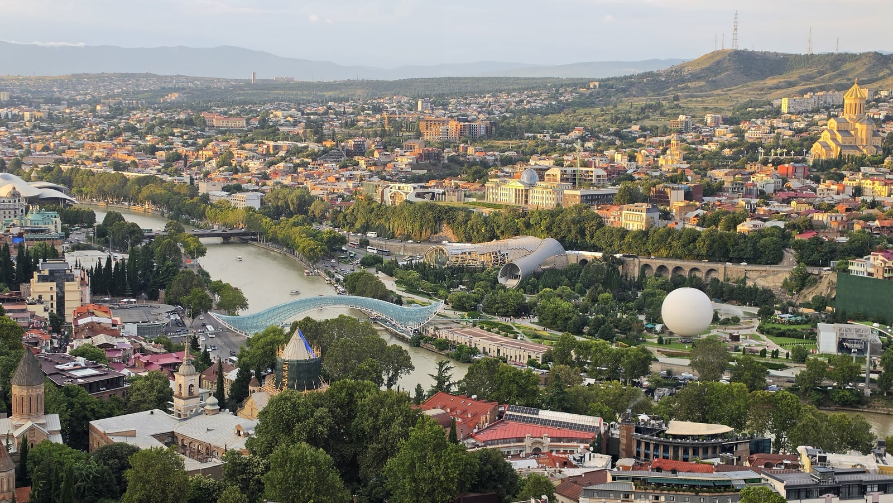
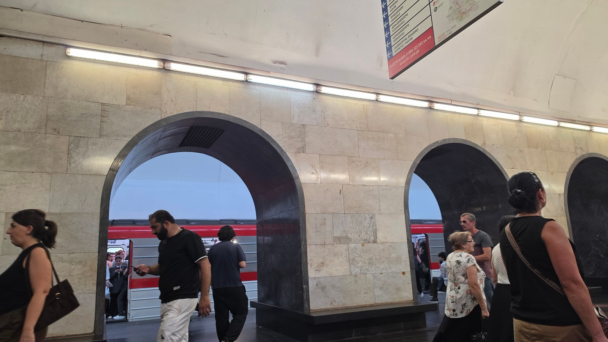

<meta charset="utf-8">
<title>트빌리시 공항 ↔ 시내 교통 — 337번 버스와 앱 택시 — 나의 투자 그리고 행복한 여행</title>
<meta name="description" content="트빌리시 공항에서 시내까지 337번 버스(1라리, 06:59~22:59)와 앱 택시(실제 약 17,000원) 비교. 결제 방법과 2026년 루스타벨리 대로 우회 정보.">
<meta name="viewport" content="width=device-width, initial-scale=1">
<link rel="canonical" href="https://danielmoon82.github.io/moon/posts/georgia-airport-to-tbilisi-2026-09-14.html">
<link rel="preconnect" href="https://fonts.googleapis.com">
<link rel="preconnect" href="https://fonts.gstatic.com" crossorigin>
<link rel="stylesheet" href="https://fonts.googleapis.com/css2?family=Hahmlet:wght@400;600;800&family=IBM+Plex+Mono:wght@400;500&family=IBM+Plex+Sans+KR:wght@300;400;500;600&display=swap">

<style>
  :root{
    --paper:#F2EEE6;--surface:#FAF8F3;--surface-2:#E7E1D5;
    --ink:#191510;--ink-2:#4A4235;--ink-3:#7D7364;
    --line:#D6CEBF;--line-soft:#E4DDD0;--accent:#B06A15;--accent-bright:#C2761A;
    --up:#E5484D;--down:#3B82F6;
    --f-display:"Hahmlet",'Nanum Myeongjo',"Apple SD Gothic Neo",serif;
    --f-body:"IBM Plex Sans KR","Apple SD Gothic Neo","Malgun Gothic",sans-serif;
    --f-mono:"IBM Plex Mono","SFMono-Regular",Consolas,monospace;
    --pad:clamp(20px,5vw,64px);
  }
  @media (prefers-color-scheme:dark){
    :root:not([data-theme="light"]){
      --paper:#0B1120;--surface:#121A2C;--surface-2:#1A2439;
      --ink:#E9EEF7;--ink-2:#A9B5C9;--ink-3:#72809A;
      --line:#26314A;--line-soft:#1D2739;--accent:#E8A33D;--accent-bright:#F0B45C;
    }
  }
  *{box-sizing:border-box;}
  body{margin:0;background:var(--paper);color:var(--ink);font-family:var(--f-body);
    font-weight:300;font-size:1rem;line-height:1.75;-webkit-font-smoothing:antialiased;}
  a{color:inherit;}
  img{max-width:100%;height:auto;}
  .wrap{max-width:760px;margin:0 auto;padding-inline:var(--pad);}
  .nav{position:sticky;top:0;z-index:20;background:color-mix(in srgb,var(--paper) 88%,transparent);
    backdrop-filter:saturate(180%) blur(12px);border-bottom:1px solid var(--line);}
  .nav-in{display:flex;align-items:center;justify-content:space-between;height:58px;}
  .brand{font-family:var(--f-display);font-weight:600;font-size:1rem;letter-spacing:-.02em;text-decoration:none;}
  .back{font-family:var(--f-mono);font-size:.72rem;color:var(--ink-3);text-decoration:none;}
  .article{padding-block:clamp(40px,7vw,72px) clamp(56px,9vw,96px);}
  .eyebrow{font-family:var(--f-mono);font-size:.68rem;letter-spacing:.16em;text-transform:uppercase;
    color:var(--accent);margin:0 0 14px;}
  h1{font-family:var(--f-display);font-weight:800;font-size:clamp(1.6rem,4.4vw,2.3rem);
    line-height:1.3;letter-spacing:-.03em;margin:0 0 16px;}
  .byline{font-family:var(--f-mono);font-size:.72rem;color:var(--ink-3);
    padding-bottom:24px;border-bottom:1px solid var(--line);margin-bottom:32px;}
  h2{font-family:var(--f-display);font-weight:600;font-size:1.25rem;letter-spacing:-.02em;margin:42px 0 14px;}
  h3{font-family:var(--f-display);font-weight:600;font-size:1.05rem;letter-spacing:-.02em;
    margin:30px 0 10px;padding-top:14px;border-top:1px solid var(--line-soft);}
  h3 .code{font-family:var(--f-mono);font-size:.7rem;font-weight:400;color:var(--ink-3);margin-left:6px;}
  p{margin:0 0 18px;color:var(--ink-2);}
  ul.checks{margin:0 0 18px;padding-left:20px;color:var(--ink-2);}
  ul.checks li{margin-bottom:8px;font-size:.94rem;}
  table{width:100%;border-collapse:collapse;font-size:.88rem;margin-bottom:8px;}
  th{font-family:var(--f-mono);font-size:.66rem;letter-spacing:.06em;text-transform:uppercase;
    color:var(--ink-3);text-align:right;padding:8px 6px;border-bottom:1px solid var(--line);}
  th:first-child{text-align:left;}
  td{padding:10px 6px;border-bottom:1px solid var(--line-soft);color:var(--ink-2);}
  td.num{font-family:var(--f-mono);text-align:right;font-variant-numeric:tabular-nums;}
  td.up{color:var(--up);} td.down{color:var(--down);}
  .scroll{overflow-x:auto;}
  figure{margin:22px 0;}
  figure img{display:block;border-radius:3px;background:var(--surface-2);}
  figcaption{margin-top:8px;font-family:var(--f-mono);font-size:.68rem;color:var(--ink-3);text-align:center;}
  .note{margin-top:34px;padding:16px 18px;border-left:3px solid var(--accent);
    background:var(--surface);border-radius:0 3px 3px 0;}
  .note p{margin:0;font-size:.85rem;color:var(--ink-3);}
  .foot{border-top:1px solid var(--line);background:var(--surface);padding-block:30px 38px;}
  .foot p{margin:0;font-size:.8rem;color:var(--ink-3);}
</style>

<nav class="nav">
  <div class="wrap nav-in">
    <a class="brand" href="../index.html">나의 투자 그리고 행복한 여행</a>
    <a class="back" href="../index.html#stocks">← 시황으로</a>
  </div>
</nav>

<main class="wrap article">
  <p class="eyebrow">Market</p>
  <h1>트빌리시 공항 ↔ 시내 교통 기록 — 337번 버스·앱 택시 요금과 시간</h1>
  <p class="byline">여행 · 2026-09-14 기준</p>

  <p>한 줄 요약: 공항 → 시내는 밤 도착이라 앱 호출 차량(약 17,000원), 시내 → 공항은 337번 버스(1라리, 약 40~50분)를 이용했습니다.</p>
  <p>337번의 운행 시간·요금·결제 수단은 트빌리시 공항 공식 안내를, 2026년 노선 우회는 트빌리시 시청 발표 보도를 근거로 붙였습니다.</p>
  <figure><figcaption>나리칼라 요새 쪽에서 내려다본 트빌리시 구시가지 (2026.8.13 19:30 촬영)</figcaption></figure>
  <h2>먼저 결론부터</h2>
  <ul class="checks">
    <li>가장 싼 방법 — 337번 버스, 1라리(약 540원)</li>
    <li>가장 편한 방법 — 앱 호출 차량. 제가 밤에 낸 요금은 약 17,000원(약 31라리)이었습니다</li>
    <li>337번 운행 시간 — 06:59~22:59 (트빌리시 공항 공식 안내)</li>
    <li>공항 ~ 시내 거리 — 약 17km</li>
    <li>버스 결제 — 교통카드나 컨택리스 은행카드. 현금만 믿고 가지 않는 게 좋습니다</li>
    <li>밤 10시 이후 도착이라면 — 차를 부르는 쪽으로 계획하세요</li>
  </ul>
  <h2>제가 실제로 이동한 방법</h2>
  <p><b>도착(8월 12일 밤)</b> — 늦은 밤 도착이라 공항에서 앱으로 차를 불러 숙소까지 갔습니다. 요금은 한화로 약 17,000원이었습니다. 앱은 탑승 전에 요금이 표시돼서 흥정할 일이 없습니다.</p>
  <p><b>출국(8월 20일)</b> — 숙소가 트빌리시 중앙역 근처였고, 시내에서 337번 버스를 타고 공항까지 갔습니다. 요금 1라리, 40~50분 정도 걸렸습니다.</p>
  <div class="note"><p>같은 구간이 17,000원과 540원입니다. 짐이 적고 낮 시간이면 버스로 충분하고, 밤이면 몇만 원 아끼려다 고생할 이유가 없습니다.</p></div>
  <h2>337번 버스 — 요금과 운행 시간</h2>
  <p>트빌리시 공항 공식 안내에 나온 내용입니다. 2026년 9월 기준입니다.</p>
  <ul class="checks">
    <li>요금 — 1회 1라리, 90분 안에 다른 버스·지하철로 갈아타면 추가 요금 없음</li>
    <li>운행 — 06:59~22:59</li>
    <li>1일권 — 3라리 (교통카드에 충전)</li>
    <li>교통카드(메트로머니) — 카드값 2라리</li>
    <li>결제 — 교통카드, 컨택리스 은행카드, 앱, 현금. 단 앱·현금은 90분 무료 환승이 안 됩니다</li>
  </ul>
  <p>저는 교통카드를 2라리에 사서 1일권(3라리)을 넣고 다녔습니다. 하루에 지하철·버스를 여러 번 탈 계획이면 1일권이 편합니다.</p>
  <figure><figcaption>트빌리시 지하철 에스컬레이터. 역이 깊어서 길게 내려갑니다 (2026.8.13 12:49 촬영)</figcaption></figure>
  <h2>337번 노선 — 어디서 타나</h2>
  <p>공항 공식 안내의 시내 → 공항 방향 경로는 이렇습니다.</p>
  <p>퀸 타마르 거리 → 영웅광장 → 멜리키시빌리 거리 → 루스타벨리 거리 → 자유광장 → 바라타시빌리 거리 → 퀸 케테반 거리 → 흑해 거리 → 카헤티 고속도로 → 공항</p>
  <p>중앙역 주변, 자유광장, 루스타벨리 쪽에 숙소가 있으면 갈아타지 않고 한 번에 갈 수 있습니다.</p>
  <figure><figcaption>337번이 지나는 자유광장의 밤 (2026.8.13 21:13 촬영)</figcaption></figure>
  <div class="note"><p>2026년 주의 — 트빌리시 시청이 2026년 7월, 루스타벨리 대로를 약 4개월간 공사로 통제한다고 발표했습니다. 337번도 우회 노선에 포함돼 멜리키시빌리 거리에서 영웅광장, 므트크바리강 오른쪽 둔치를 거쳐 바라타시빌리 거리로 돌아갑니다. 공사 기간에 간다면 정류장 위치를 한 번 더 확인하고 시간을 넉넉히 잡으세요.</p></div>
  <h2>앱 택시 — 요금과 주의할 점</h2>
  <p>여행 가이드들이 안내하는 공항 → 시내 앱 택시 요금은 보통 25~35라리, 시간은 교통 상황에 따라 20~45분입니다. 제가 낸 약 17,000원(약 31라리)도 이 범위 안입니다.</p>
  <ul class="checks">
    <li>앱에서 요금이 먼저 나오니 흥정할 필요가 없습니다</li>
    <li>앱을 쓰려면 도착하자마자 데이터가 필요합니다. 출국 전 eSIM을 준비하거나 공항에서 유심을 사는 방법이 있습니다</li>
    <li>공항 출구에서 바로 말을 거는 기사와 요금 흥정을 하는 것보다 앱이 마음 편합니다</li>
  </ul>
  <p>트빌리시에서 많이 쓰이는 호출 앱으로는 볼트(Bolt) 등이 있습니다. 출발 전에 미리 설치하고 가입해두면 공항에서 헤매지 않습니다.</p>
  <h2>도착 시간별로 이렇게 고르세요</h2>
  <ul class="checks">
    <li>아침~저녁 도착, 짐이 가벼움 — 337번 버스. 1라리로 시내까지 갑니다</li>
    <li>밤 10시 전후 이후 도착 — 앱 호출 차량. 입국 심사와 수하물을 기다리다 막차를 놓칠 수 있습니다</li>
    <li>큰 캐리어 두 개 이상, 일행 여럿 — 앱 호출 차량이 1인당 부담도 크지 않습니다</li>
    <li>출국하는 날 — 337번이 저렴하지만 40~50분 걸리니 공항 도착 시간을 넉넉히 잡으세요</li>
  </ul>
  <h2>숙소 위치를 정할 때 공항 교통도 같이 보세요</h2>
  <figure><figcaption>트빌리시 지하철 승강장 (2026.8.19 18:24 촬영)</figcaption></figure>
  <p>저는 중앙역 근처 아파트에 묵었습니다. 지하철로 구시가지까지 10~15분이었고, 337번 노선도 가까워서 출국 날 이동이 간단했습니다.</p>
  <p>구시가지 한가운데 숙소는 걸어 다니기 좋지만 언덕과 좁은 골목이 많습니다. 캐리어를 끌고 오르내리는 걸 생각하면 지하철역이나 337번 노선 근처가 편합니다.</p>
  <div style="text-align:center;margin:30px 0"><a href="https://danielmoon82.github.io/moon/posts/tbilisi-where-to-stay-2026-09-14.html" target="_blank" rel="nofollow sponsored noopener" style="display:inline-block;padding:15px 28px;background:#E34948;color:#fff;font-weight:700;font-size:18px;text-decoration:none;border-radius:8px"><b>▶ 트빌리시 숙소 지역별 비교 보기</b></a></div>
  <h2>자주 묻는 질문</h2>
  <p><b>트빌리시 공항에서 시내까지 버스 요금은 얼마인가요?</b></p>
  <p>337번 버스가 1라리입니다. 한화로 약 540원입니다. 90분 안에 지하철이나 다른 버스로 갈아타면 추가 요금이 없습니다(교통카드·은행카드 결제 시).</p>
  <p><b>337번 버스는 몇 시까지 다니나요?</b></p>
  <p>공항 공식 안내 기준 06:59~22:59입니다. 밤늦게 도착하면 차를 부르는 편이 안전합니다.</p>
  <p><b>공항에서 시내까지 택시비는 얼마인가요?</b></p>
  <p>앱 택시는 보통 25~35라리 수준입니다. 제가 밤에 이용했을 때는 한화 약 17,000원이 나왔습니다.</p>
  <p><b>버스에서 현금을 내도 되나요?</b></p>
  <p>공식 안내상 현금도 가능하지만 90분 무료 환승이 안 됩니다. 교통카드(2라리)나 컨택리스 은행카드를 쓰는 편이 낫습니다.</p>
  <p><b>공항까지 버스로 얼마나 걸리나요?</b></p>
  <p>제 경우 중앙역 근처에서 40~50분이었습니다. 출퇴근 시간과 2026년 루스타벨리 대로 공사 기간에는 더 걸릴 수 있습니다.</p>
  <h2>정리하면</h2>
  <p>트빌리시 공항 이동은 복잡하지 않습니다. 버스 한 대(337번), 요금 1라리, 막차 22시 59분만 기억하면 됩니다.</p>
  <p>밤 비행기라면 처음부터 차를 부르고, 낮에 움직이는 날은 버스를 타세요. 저는 그렇게 해서 도착은 편하게, 출국은 싸게 끝냈습니다.</p>
  <div style="text-align:center;margin:30px 0"><a href="https://danielmoon82.github.io/moon/posts/georgia-travel-guide-2026-09-14.html" target="_blank" rel="nofollow sponsored noopener" style="display:inline-block;padding:15px 28px;background:#E34948;color:#fff;font-weight:700;font-size:18px;text-decoration:none;border-radius:8px"><b>▶ 조지아 여행 준비 총정리 보기</b></a></div>
  <p style="font-size:12px;color:#999;line-height:1.6;margin-top:36px">방문 날짜와 시각은 2026년 8월 12~20일 여행 중 찍은 사진의 촬영 시각(조지아 현지 시각)으로 확인했습니다. 요금·운영 정보는 2026년 9월 13~14일에 확인한 공개 정보이며 바뀔 수 있습니다. 원화 환산은 조지아 중앙은행 2026년 8월 14일 환율(1,000원 = 1.8403라리)로 계산한 대략치입니다. 337번 운행 정보는 트빌리시 공항 공식 사이트(tbilisiairport.com), 노선 우회는 인터프레스뉴스 2026년 7월 21일 보도를 참고했습니다. 앱 택시 요금 범위는 여행 가이드들의 일반적인 안내이며 시간대·수요에 따라 달라집니다.</p>
</main>

<footer class="foot">
  <div class="wrap"><p>나의 투자 그리고 행복한 여행 · 투자 판단의 참고 자료일 뿐, 매수·매도를 권유하지 않습니다.</p></div>
</footer>
